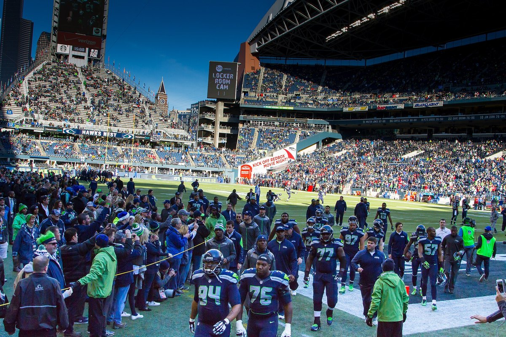
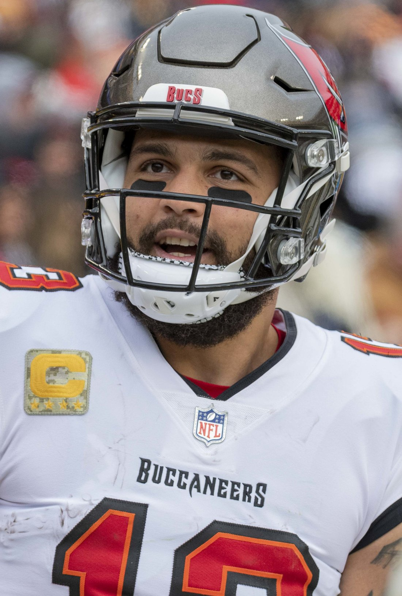
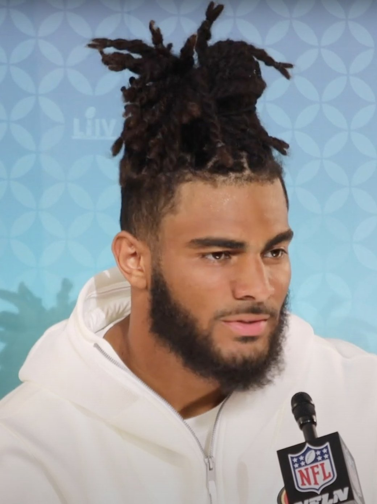

49ers Beat Seahawks 32 to 29 in Seattle and Go 5 and 0
Seven turnovers. A linebacker thrown out. Deebo gone with a hamstring. The loudest building in football. The team that ended our season 41 to 6 nine months ago. And we walked out of there with the win anyway.

Cooper Kupp caught the ball at our 41 and went out of bounds, and for about four seconds I genuinely didn't know if he'd made the line. Fourth down. Fifty four seconds left. The whole building up on its feet. I was standing in my living room with both hands on top of my head like a guy watching his car roll down a hill.
Short. A yard short. Malik Mustapha got him.
Then they went to replay and I had to live through the whole thing again in slow motion, the review, the ref under the hood, the camera finding Shanahan, the camera finding Macdonald, and I swear I aged a year. Upheld. Purdy took a knee. Then he took another one. And the Seattle Seahawks, the world champions, the team that ran us out of this exact building 41 to 6 in the divisional round in January, lost at home to the 49ers, 32 to 29.
We're 5 and 0. I still can't sit down.
This wasn't pretty. I don't care. It was a war.
I want to be honest about this game, because the honest version is the better story. We didn't dominate anybody. We put up 269 yards. We turned it over three times. We had eight penalties for 70 yards. Eddy Pineiro missed a 52 yarder wide left. Dre Greenlaw got himself thrown out of the game in the second quarter. Deebo hurt his hamstring on the play he fumbled and never came back. Purdy had basically nothing going for three quarters against that defense, and Byron Murphy sacked him twice and lived in our backfield.
And that's on the road, in a division game, against the defending champs, with Nick Bosa still out with the calf and half our defensive front on crutches or in street clothes. James Thompson Jr. out. Marques Sigle out. Alfred Collins done for the year. C.J. West on IR. Practice squad guys playing real snaps in the loudest place in the league.
There were seven turnovers in this game. Seven. That's the most in any NFL game this season. Every time you thought somebody had grabbed hold of it, the ball was on the turf again and 68,000 people were screaming about it. It felt less like a football game and more like two guys fighting in a parking lot over a set of keys.
We got the keys.

The first half was our defense taking the ball away and dunking on them
It started perfectly. Third snap of Seattle's first drive, Darnold throws it right into Renardo Green's hands at their 18. A few plays later Purdy finds Mike Evans from 2 yards out and we're up 7 to 0 before the crowd had even found its seats. I let myself feel good. That was a mistake, because Emanuel Wilson punched it in on their next real drive and Jason Myers started doing what Jason Myers did all day, which is kick the ball through the uprights from anywhere he wanted.
Myers was 5 for 5. Forty nine, fifty, forty three, forty eight, forty. He scored 17 points by himself. I'd like him to go play somewhere else now.
But our defense kept ripping the ball out. Fred Warner punched one loose from Wilson at the Seattle 11 and Mustapha fell on it, and on the very next snap Christian McCaffrey ran it in from 11 to make it 14 to 10. Warner had 10 tackles today, by the way. He was everywhere. He's always everywhere.
And then the play I'm going to watch about forty more times this week.
Seattle burned its timeouts on defense late in the half to try to get the ball back. Got it, too. At their own 4 yard line, with 18 seconds on the clock and us holding all three of our timeouts. I'm screaming at the TV, take a knee, take a knee, you're at the 4, and they hand it to George Holani instead. Gracen Halton blows into the backfield, rips the ball out, and falls on it in the end zone.
Touchdown, 49ers. 21 to 13 at the half. I made a noise my neighbors definitely heard.
Greenlaw, man. Greenlaw.

I have to talk about this because it nearly cost us the game. Darnold scrambled out of bounds on their sideline in the second quarter and Greenlaw hit him late. Flag, fine, personal foul. Then Seattle's whole sideline came at him, and Greenlaw head butted Ernest Jones, who didn't have a helmet on. Jones was bleeding. Greenlaw was gone.
I love Dre Greenlaw. I love the guy who plays every snap like somebody owes him money. But you can't do that. Not there, not in that game, not with this defense already held together with tape. That's at least the third time in his career he's been tossed, and I'm saying this as a fan who'd run through a wall for him: be smarter, Dre. We need you on the field, not in the tunnel.
What gets me is the guys who filled in. Jaden Dugger had 9 tackles and a sack. Ji'Ayir Brown had 7. Mustapha had 7 and made the biggest tackle of the year. Nobody on that defense blinked when their linebacker got ejected. They just kept hitting people.
Then the third quarter happened, and I turned the sound off
I didn't actually turn it off. I turned it down. There's a difference and I'm sticking to it.
Renardo Green picked Darnold again on the very first play of the second half. His second interception of the day. Seattle added 15 yards of unnecessary roughness on top of it, and we're sitting at their 39 with a chance to make it a two score game and basically take the building out of it.
Pineiro, 52 yards. Wide left.
And from there it just fell apart for a while. Purdy threw one right to Nehemiah Pritchett, who ran it back 20 yards to our 23, and Darnold found Jaxon Smith-Njigba from 16 for the lead. Next possession, Deebo gets the ball on the left side, Drake Thomas knocks it loose, Seattle recovers, and Deebo's down holding his hamstring. They reviewed it and the fumble stood. Another Myers field goal. Just like that it's 26 to 21 Seattle, the crowd is shaking the stadium, and I'm doing the thing every Niners fan does where you start mentally preparing the speech about how 4 and 1 is still fine.
Every ghost from January was in that building. Every one.
Mike Evans is why we went and got Mike Evans

Down five, end of the third, and the drive starts going backwards. Purdy gets flagged for intentional grounding and it's second and 21. Second and 21, in Seattle, down five, with Murphy and that whole front teeing off. That's the exact spot where last year's team would have punted and lost.
Purdy threw it up to Evans anyway. Twenty eight yards. Evans just went up over everybody and took it. Then he did it again for 23 more. Four catches on that one drive for 75 yards, and when Purdy flipped it to Brandin Cooks from 7 yards out for the touchdown, I was already yelling before Cooks even turned around. Then they went for two, Purdy to Evans again, and it's 29 to 26 us.
This is why the front office chased him so hard in March. A real X receiver. A guy who turns a throw into a 50/50 ball and then makes it a 70/30 ball because he's bigger and he wants it more. Evans finished with 7 catches for 113 yards, a touchdown and the conversion. After the game he said he thinks he's one of the best receivers in the game. Yeah, Mike. You are. Today you were the best player on the field.
Purdy's line won't impress anybody, 19 of 29 for 189 with two touchdowns and a pick. Almost all of it came in the fourth quarter. I don't care about the first three quarters anymore. You don't get remembered for the first three quarters in that building.

Two minutes of my life I'm never getting back
Of course Seattle came right back. Darnold moved them down and Myers tied it from 40 with 6:55 left. 29 to 29. Ball back to us.
And Purdy just did it again. Forty three yards, no panic, no hero ball, just McCaffrey and Kaelon Black running it straight at them and bleeding the clock down to the two minute warning, and Pineiro, the same guy who missed from 52 in the third, walked out there with 1:56 left and drilled a 44 yarder. 32 to 29. I'd forgiven him before the ball landed in the net.
Then the last drive. A big kickoff return by Rashid Shaheed that got wiped back by a hold. Darnold hits Smith-Njigba for 35 yards on the first play and they're at midfield in about four seconds, and I'm thinking oh no, oh no, not like this. Then three straight incompletions. Smith-Njigba had a third down ball at our 25 hit him right in the hands and he dropped it. He said after the game he has to reel those in. Thank you, Jaxon. Truly.
Fourth and 10. Kupp, sideline, Mustapha. A yard short. Upheld.

Why this one is different
Fred Warner said it after the game better than I can. Seattle won it all last year, and they're the ones you have to go through. He called it a heavyweight bout. That's exactly what it was, and for the first time in a long time we were the ones still standing.
Think about where we were. We lost to this team twice to close last season. We didn't score a single touchdown in either game. The second one was 41 to 6 in the playoffs, and I remember turning that game off in the third quarter and sitting in my car in the driveway for a while because I didn't want to go back inside and talk about it. I've thought about that score every week since.
Today we scored three touchdowns in the first half alone. Our defense forced four turnovers and sacked Darnold five times. We lost our best receiver to a hamstring, our fiery linebacker to an ejection, our best pass rusher to a calf before the game even started, and we turned it over three times ourselves, and none of it mattered. That's the part I keep coming back to. The mistakes were real and the injuries were real and the noise was real, and this team didn't care.
Teams that are just good lose this game. They lose it 26 to 21 in the third quarter and they never get it back. I've watched a lot of those teams. This felt like something else.
5 and 0, and the NFC West runs through us
We're 5 and 0. Seattle's 3 and 2. We're two games clear of the champs in our own division and we already took the first one in their building. I said in my preview that a win in Seattle would put us in control of the West. It did. Now we have to actually keep it, and we get them again at Levi's on November 29.
Next up it's Washington at home on Monday night, October 19. A full extra day of rest for a team that needs every minute of it. I'll be watching the injury report on Deebo all week, and I'll be nervous about it, because I'm always nervous. That's the job.
But not tonight. Tonight I'm going to watch the Halton fumble return about eleven more times, send the group chat something obnoxious about Jason Myers, and go to bed 5 and 0.
We beat the champs in their house. Say it with me.
More coverage: 49ers · 49ers 2026 schedule · 49ers injury report · 49ers depth chart · NFL